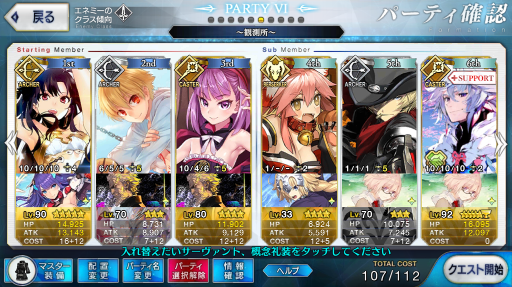

<!DOCTYPE HTML>
<html>
<head><meta name="generator" content="Hexo 3.9.0">
  <meta charset="utf-8">
  
  <title>【FGO】バビロニア 観測所 追憶の貝殻集め 周回 | ぷらずま式改</title>
  <meta name="author" content="NPlasma">

  
  <meta name="description" content="NPlasmaの個人メモ">
  

  

  <meta name="viewport" content="width=device-width, initial-scale=1, maximum-scale=1">

  <meta property="og:title" content="【FGO】バビロニア 観測所 追憶の貝殻集め 周回">
  <meta property="og:site_name" content="ぷらずま式改">

  
  

  
    <meta property="og:image" content="/img/ogp.png">
  

  <!-- ogp -->
  
    
      <meta name="description" content="この記事ではFGOフリークエストの周回を扱います。編成画像にて最終再臨絵のネタバレがあるのでご注意を">
<meta name="keywords" content="Fate,ゲーム,FGO,Fate&#x2F;GrandOrder,フリクエ周回">
<meta property="og:type" content="article">
<meta property="og:title" content="【FGO】バビロニア 観測所 追憶の貝殻集め 周回">
<meta property="og:url" content="http://elleonard.github.io/nplus_doc/2018/05/05/game/fate/fgo/freequest/observatory-shell/index.html">
<meta property="og:site_name" content="ぷらずま式改">
<meta property="og:description" content="この記事ではFGOフリークエストの周回を扱います。編成画像にて最終再臨絵のネタバレがあるのでご注意を">
<meta property="og:locale" content="ja">
<meta property="og:image" content="http://elleonard.github.io/nplus_doc/2018/05/05/game/fate/fgo/freequest/observatory-shell/observatory-shell.png">
<meta property="og:updated_time" content="2019-09-13T04:56:39.318Z">
<meta name="twitter:card" content="summary">
<meta name="twitter:title" content="【FGO】バビロニア 観測所 追憶の貝殻集め 周回">
<meta name="twitter:description" content="この記事ではFGOフリークエストの周回を扱います。編成画像にて最終再臨絵のネタバレがあるのでご注意を">
<meta name="twitter:image" content="http://elleonard.github.io/nplus_doc/2018/05/05/game/fate/fgo/freequest/observatory-shell/observatory-shell.png">
<meta name="twitter:creator" content="@elleonard_f">
    
    <meta name="twitter:image" content="http://elleonard.github.io/nplus_doc/img/ogp.png">
  

  <link rel="alternate" href="/nplus_doc/atom.xml" title="ぷらずま式改" type="application/atom+xml">
  <link rel="stylesheet" href="/nplus_doc/css/style.css" media="screen" type="text/css">
  <!--[if lt IE 9]><script src="//html5shiv.googlecode.com/svn/trunk/html5.js"></script><![endif]-->
  


  <link rel="apple-touch-icon" sizes="180x180" href="/nplus_doc/favicon/apple-touch-icon.png">
  <link rel="icon" type="image/png" sizes="32x32" href="/nplus_doc//favicon/favicon-32x32.png">
  <link rel="icon" type="image/png" sizes="16x16" href="/nplus_doc//favicon/favicon-16x16.png">
  <link rel="manifest" href="/nplus_doc//favicon/site.webmanifest">
  <link rel="mask-icon" href="/nplus_doc//favicon/safari-pinned-tab.svg" color="#5bbad5">
  <meta name="msapplication-TileColor" content="#da532c">
  <meta name="theme-color" content="#ffffff">
</head>
</html>

<body>
  <header id="header" class="inner"><div class="alignleft">
  <h1><a href="/nplus_doc/">ぷらずま式改</a></h1>
  <h2><a href="/nplus_doc/">NPlasma個人メモ</a></h2>
</div>
<nav id="main-nav" class="alignright">
  <ul>
    
      <li><a href="/">Home</a></li>
    
      <li><a href="/nplus_doc/2016/05/29/about/">About</a></li>
    
      <li><a href="https://twitter.com/elleonard_f">Twitter</a></li>
    
      <li><a href="https://github.com/elleonard">GitHub</a></li>
    
      <li><a href="/nplus_doc/2018/02/09/game/fate/fgo/fgo-link/">FGO</a></li>
    
  </ul>
  <div class="clearfix"></div>
</nav>
<div class="clearfix"></div></header>
  <div id="content" class="inner">
    <div id="main-col" class="alignleft"><div id="wrapper"><article class="post">
  
  <div class="post-content">
    <header>
      
        <div class="icon"></div>
        <time datetime="2018-05-05T14:47:51.000Z"><a href="/nplus_doc/2018/05/05/game/fate/fgo/freequest/observatory-shell/">2018-05-05</a></time>
      
      
  
    <h1 class="title">【FGO】バビロニア 観測所 追憶の貝殻集め 周回</h1>
  

    </header>
    <div class="entry">
      
        <div id="toc" class="toc-article">
          <p class="toc-title">目次</p>
          <ol class="toc"><li class="toc-item toc-level-1"><a class="toc-link" href="#基本方針"><span class="toc-text">基本方針</span></a></li><li class="toc-item toc-level-1"><a class="toc-link" href="#ドロップアイテム"><span class="toc-text">ドロップアイテム</span></a></li><li class="toc-item toc-level-1"><a class="toc-link" href="#エネミー構成"><span class="toc-text">エネミー構成</span></a></li><li class="toc-item toc-level-1"><a class="toc-link" href="#編成"><span class="toc-text">編成</span></a></li><li class="toc-item toc-level-1"><a class="toc-link" href="#周回用キャラ選別"><span class="toc-text">周回用キャラ選別</span></a><ol class="toc-child"><li class="toc-item toc-level-2"><a class="toc-link" href="#アーラシュ-スパルタクス"><span class="toc-text">アーラシュ/スパルタクス</span></a></li><li class="toc-item toc-level-2"><a class="toc-link" href="#イシュタル"><span class="toc-text">イシュタル</span></a></li><li class="toc-item toc-level-2"><a class="toc-link" href="#火力サポート＋全体宝具持ち"><span class="toc-text">火力サポート＋全体宝具持ち</span></a><ol class="toc-child"><li class="toc-item toc-level-3"><a class="toc-link" href="#バニヤン"><span class="toc-text">バニヤン</span></a></li><li class="toc-item toc-level-3"><a class="toc-link" href="#子ギル"><span class="toc-text">子ギル</span></a></li><li class="toc-item toc-level-3"><a class="toc-link" href="#ギルガメッシュ"><span class="toc-text">ギルガメッシュ</span></a></li><li class="toc-item toc-level-3"><a class="toc-link" href="#エレナ（術）"><span class="toc-text">エレナ（術）</span></a></li><li class="toc-item toc-level-3"><a class="toc-link" href="#ドレイク"><span class="toc-text">ドレイク</span></a></li><li class="toc-item toc-level-3"><a class="toc-link" href="#水着イシュタル"><span class="toc-text">水着イシュタル</span></a></li><li class="toc-item toc-level-3"><a class="toc-link" href="#ネロ（術）"><span class="toc-text">ネロ（術）</span></a></li></ol></li></ol></li></ol>
        </div>
        <p>この記事ではFGOフリークエストの周回を扱います。<br>編成画像にて最終再臨絵のネタバレがあるのでご注意を</p>
<a id="more"></a>

<h1 id="基本方針"><a href="#基本方針" class="headerlink" title="基本方針"></a>基本方針</h1><ul>
<li>3T周回する</li>
</ul>
<h1 id="ドロップアイテム"><a href="#ドロップアイテム" class="headerlink" title="ドロップアイテム"></a>ドロップアイテム</h1><ul>
<li>追憶の貝殻</li>
</ul>
<h1 id="エネミー構成"><a href="#エネミー構成" class="headerlink" title="エネミー構成"></a>エネミー構成</h1><ul>
<li>ヤドカリ</li>
</ul>
<h1 id="編成"><a href="#編成" class="headerlink" title="編成"></a>編成</h1><p></p>
<p>ステラオダチェンなし<br>子ギルの礼装は未凸カレスコでもOK</p>
<p>全員が3T持続するバフを持っているが、1T持続のもののみでも構わない<br>1～2wはさほどHPが高くなく、全体宝具バーサーカーでも打ち取れる</p>
<p>問題は3wのHPの高さで、イシュタルの宝具で片付けるにはそれなりにバフを盛る必要がある<br>画像の構成では割とギリギリライン<br>マスター礼装をアニバーサリー・ブロンドや2004年の断片にしたり、銀フォウをしっかり詰めばもう少し選択に幅が出る</p>
<h1 id="周回用キャラ選別"><a href="#周回用キャラ選別" class="headerlink" title="周回用キャラ選別"></a>周回用キャラ選別</h1><h2 id="アーラシュ-スパルタクス"><a href="#アーラシュ-スパルタクス" class="headerlink" title="アーラシュ/スパルタクス"></a>アーラシュ/スパルタクス</h2><p>いつもの<br>2wをスパルタクスで片付けるには銀フォウをしっかり詰んだ上で、剣の凱旋はLv.10にし、聖杯一つ入れておかないと危ないかも</p>
<h2 id="イシュタル"><a href="#イシュタル" class="headerlink" title="イシュタル"></a>イシュタル</h2><p>3wの最適解<br>NP50チャージに加え、持続する全体攻撃アップ、自身の火力アップと必要なものが揃っている</p>
<p>魔力放出（宝石）を2wで使っておくのをうっかり忘れないように</p>
<h2 id="火力サポート＋全体宝具持ち"><a href="#火力サポート＋全体宝具持ち" class="headerlink" title="火力サポート＋全体宝具持ち"></a>火力サポート＋全体宝具持ち</h2><p>1wのHPが低いので、等倍でも星4以上であればバフをさほど盛らずに十分に倒せるレベル<br>1wを適当に全体宝具で片付けつつ、3wにバフをかけられるサーヴァントがいると良い</p>
<h3 id="バニヤン"><a href="#バニヤン" class="headerlink" title="バニヤン"></a>バニヤン</h3><p>1wであれば問題なく飛ばせる<br>全体バスターアップは3T持続する</p>
<p>3wでデバフをかければ安定感が増す</p>
<h3 id="子ギル"><a href="#子ギル" class="headerlink" title="子ギル"></a>子ギル</h3><p>全体宝具アーチャーで、高ランクのカリスマ持ち<br>星3なのでコストが軽く、入手も育成も手軽<br>アーチャーのため、2w処理も可能</p>
<p>NPチャージがないので、凸カレスコがあると良い</p>
<h3 id="ギルガメッシュ"><a href="#ギルガメッシュ" class="headerlink" title="ギルガメッシュ"></a>ギルガメッシュ</h3><p>こんなところに出向いていただくのは恐れ多い<br>NPチャージ、高威力の全体宝具、カリスマと、周回に必要なものは全て備えている</p>
<p>もったいないが、2wの雑種の処理をお願いしよう</p>
<h3 id="エレナ（術）"><a href="#エレナ（術）" class="headerlink" title="エレナ（術）"></a>エレナ（術）</h3><p>全体NPチャージ、3色カードバフ（3T持続）、全体宝具と完璧な性能をしている</p>
<h3 id="ドレイク"><a href="#ドレイク" class="headerlink" title="ドレイク"></a>ドレイク</h3><p>3wで嵐の航海者を発動して火力サポート<br>自前でNPを50貯められるので、礼装選択の幅も広い</p>
<h3 id="水着イシュタル"><a href="#水着イシュタル" class="headerlink" title="水着イシュタル"></a>水着イシュタル</h3><p>輝ける水の衣は3T持続するBQアップバフ<br>NP補助は必要になるので注意</p>
<h3 id="ネロ（術）"><a href="#ネロ（術）" class="headerlink" title="ネロ（術）"></a>ネロ（術）</h3><p>NP50チャージに、倍率が非常に大きい攻撃力バフを持つ<br>死なずのマグスはレベル1の時点で30％と、カリスマ等の全体バフの追随を許さない</p>
<p>宝具演出が長いのが難点</p>

      
    </div>
    
    <footer>
        <div class="alignright">
            <a href="https://twitter.com/share?ref_src=twsrc%5Etfw" class="twitter-share-button" data-text="【FGO】バビロニア 観測所 追憶の貝殻集め 周回 | ぷらずま式改" data-url="http://elleonard.github.io/nplus_doc/2018/05/05/game/fate/fgo/freequest/observatory-shell/" data-via="elleonard_f" data-show-count="false">Tweet</a><script async src="https://platform.twitter.com/widgets.js" charset="utf-8"></script>
        </div>
        
  
  <div class="categories">
    <a href="/nplus_doc/categories/FGO/">FGO</a>
  </div>

        
  
  <div class="tags">
    <a href="/nplus_doc/tags/Fate/">Fate</a>, <a href="/nplus_doc/tags/ゲーム/">ゲーム</a>, <a href="/nplus_doc/tags/FGO/">FGO</a>, <a href="/nplus_doc/tags/Fate-GrandOrder/">Fate/GrandOrder</a>, <a href="/nplus_doc/tags/フリクエ周回/">フリクエ周回</a>
  </div>

        
          <div class="article-prev">
              <a href="/nplus_doc/2018/05/07/game/fate/fgo/apocrypha/garden/">【FGO】Apocrypha/Inheritance of Glory 物資調達（庭園） 天級 <span class="prev-arrow"/></a>
            </div>
        
        
          <div class="article-next">
            <a href="/nplus_doc/2018/05/05/game/fate/fgo/freequest/togenkyo-golem-stone/">【FGO】アガルタ 桃源郷 八連双晶集め 周回 <span class="next-arrow"/></a>
          </div>
        
        <!-- partial('post/share') -->
      <div class="clearfix"></div>
    </footer>
  </div>
</article>


</div></div>
    <aside id="sidebar" class="alignright">
  <div class="search">
  <form action="//google.com/search" method="get" accept-charset="utf-8">
    <input type="search" name="q" results="0" placeholder="検索">
    <input type="hidden" name="q" value="site:elleonard.github.io/nplus_doc">
  </form>
</div>

  
<div class="widget tag">
  <h3 class="title">カテゴリ</h3>
  <ul class="entry">
  
    <li><a href="/nplus_doc/categories/FGO/">FGO</a><small>47</small></li>
  
    <li><a href="/nplus_doc/categories/niconico/">niconico</a><small>3</small></li>
  
    <li><a href="/nplus_doc/categories/アニメ感想/">アニメ感想</a><small>9</small></li>
  
    <li><a href="/nplus_doc/categories/ゲーム/">ゲーム</a><small>42</small></li>
  
    <li><a href="/nplus_doc/categories/ゲーム/ゲームレビュー/">ゲームレビュー</a><small>31</small></li>
  
    <li><a href="/nplus_doc/categories/ゲーム制作/">ゲーム制作</a><small>7</small></li>
  
    <li><a href="/nplus_doc/categories/遊戯王ブロンティーズ/デッキレシピ/">デッキレシピ</a><small>4</small></li>
  
    <li><a href="/nplus_doc/categories/小説/">小説</a><small>3</small></li>
  
    <li><a href="/nplus_doc/categories/情報技術/">情報技術</a><small>11</small></li>
  
    <li><a href="/nplus_doc/categories/漫画/">漫画</a><small>2</small></li>
  
    <li><a href="/nplus_doc/categories/百合/">百合</a><small>6</small></li>
  
    <li><a href="/nplus_doc/categories/艦これ/">艦これ</a><small>76</small></li>
  
    <li><a href="/nplus_doc/categories/遊戯王ブロンティーズ/">遊戯王ブロンティーズ</a><small>4</small></li>
  
    <li><a href="/nplus_doc/categories/雑記/">雑記</a><small>4</small></li>
  
  </ul>
</div>


  
<div class="widget tag">
  <h3 class="title">最近の投稿</h3>
  <ul class="entry">
    
      <li>
        <a href="/nplus_doc/2019/11/28/engineering/rmmv/good-plugin/">RPGツクールMV 良いプラグインとは</a>
      </li>
    
      <li>
        <a href="/nplus_doc/2019/11/16/game/pokemon/pikachu-ev/">【ゲーム感想】ポケットモンスター Let&#39;s Go! イーブイ</a>
      </li>
    
      <li>
        <a href="/nplus_doc/2019/11/05/novel/kindaichi-kosuke/">【小説感想】金田一耕助ファイル 全22冊合本版</a>
      </li>
    
      <li>
        <a href="/nplus_doc/2019/11/01/engineering/rmmv/yanfly-retirement-announcement/">Yanfly氏の引退表明和訳</a>
      </li>
    
      <li>
        <a href="/nplus_doc/2019/10/22/game/bang-dream/lisa-younger-brother/">今井リサの弟問題に関する理屈と感情</a>
      </li>
    
  </ul>
</div>


  
<div class="widget tag">
  <h3 class="title">Link</h3>
  <ul class="entry">
    
      <li>
        <a href="https://www.nicovideo.jp/">niconico</a>
      </li>
    
      <li>
        <a href="http://lovingtheflags1986.blog96.fc2.com/">国旗と酒が待ち遠しいドリル日記</a>
      </li>
    
  </ul>
</div>


</aside>
    
    <div class="clearfix"></div>
  </div>
  <footer id="footer" class="inner"><div class="alignleft">
  <p>
  
  &copy; 2019 NPlasma
  
  All rights reserved.</p>
  <p>Powered by <a href="http://hexo.io/" target="_blank">Hexo</a></p>
</div>
<div class="clearfix"></div>
</footer>
  <script src="/nplus_doc/js/jquery.imagesloaded.min.js"></script>
<script src="/nplus_doc/js/gallery.js"></script>


<link rel="stylesheet" href="/nplus_doc/fancybox/jquery.fancybox.css" media="screen" type="text/css">
<script src="/nplus_doc/fancybox/jquery.fancybox.pack.js"></script>
<script type="text/javascript">
(function($){
  $('.fancybox').fancybox();
})(jQuery);
</script>


<div id='bg'></div>
</body>
</html>
